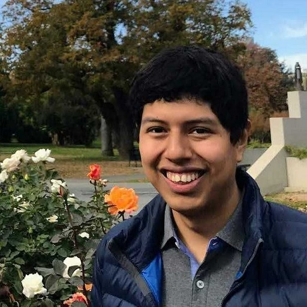

sf-meetup
Created by Michael Robinson on Thursday, May 4th, 2023
Michael RobinsonWednesday, August 30th, 2023 at 3:11:18 PM GMT-04:00
Adding the venue info in case it’s more convenient than the meetup page:
Michael RobinsonWednesday, August 30th, 2023 at 3:12:55 PM GMT-04:00
Time: 5:30-8:30 pm
Address: 8 California St., San Francisco, CA, seventh floor
Getting in: someone from Astronomer will be in the lobby to direct you
Address: 8 California St., San Francisco, CA, seventh floor
Getting in: someone from Astronomer will be in the lobby to direct you

Kevin LanguascoThursday, August 31st, 2023 at 6:29:01 PM GMT-04:00
@Kevin Languasco has joined the channel

Aaruna GodthiSaturday, September 23rd, 2023 at 4:47:37 PM GMT-04:00
@Aaruna Godthi has joined the channel